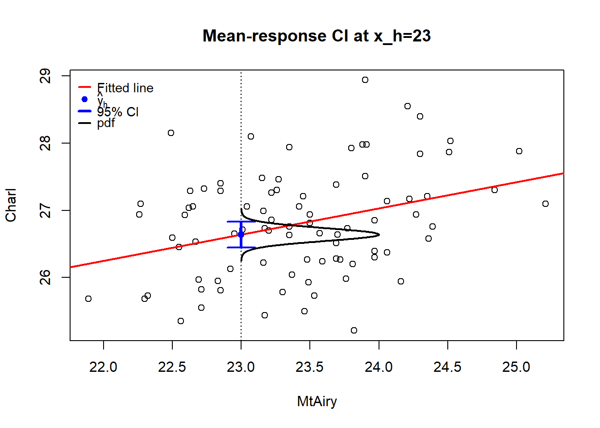
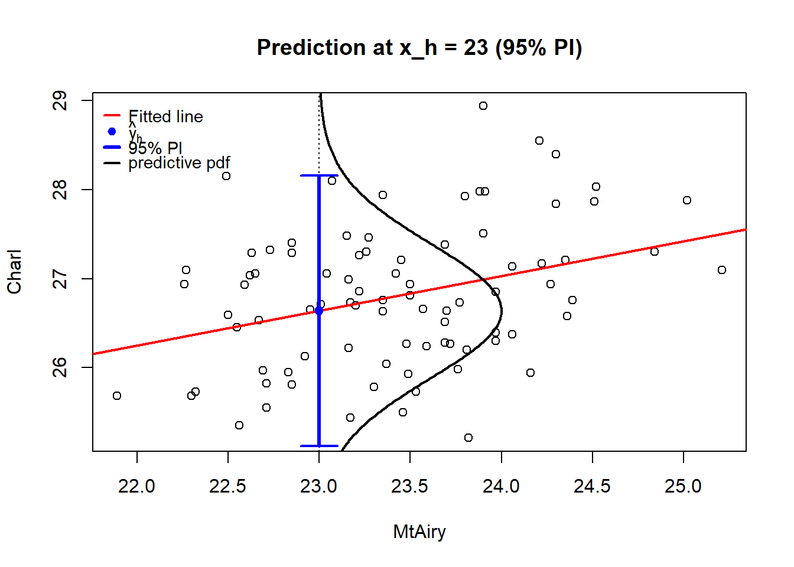
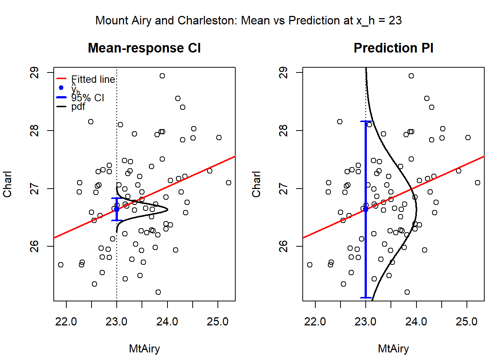
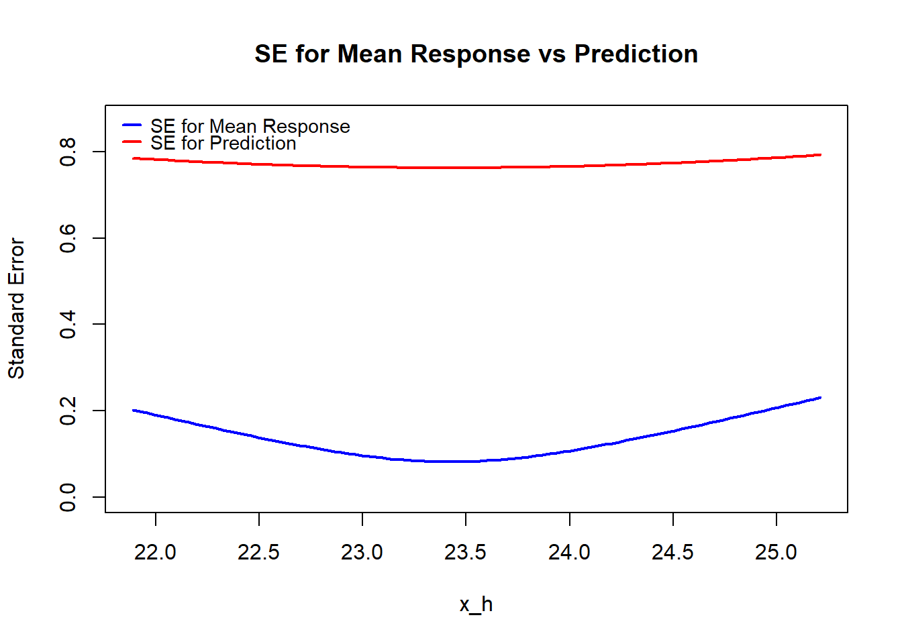
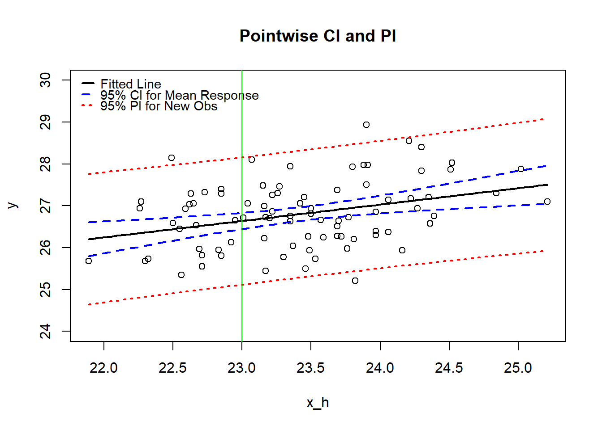

Code

In lecture 01, we introduced the simple linear regression model and the least squares estimation (LSE) method.
LSE: \[\text{SSE} = \sum_{i=1}^n (y_i - \hat{y}_i)^2 = \sum_{i=1}^n (y_i - \hat\beta_0 - \hat\beta_1 x_i)^2\] \[\{\hat\beta_0, \hat\beta_1\} = \arg\min_{\beta_0, \beta_1} \sum_{i=1}^n (y_i -\beta_0 - \beta_1 x_i)^2\]
The LSEs are \[\hat\beta_1 =\frac{\sum_{i=1}^n (x_i - \bar{x})y_i}{\sum_{i=1}^n (x_i - \bar{x})^2}, \quad \hat\beta_0 = \bar{y} - \hat\beta_1 \bar{x}.\]
where \(se(\hat{\beta_1}) =\sqrt{\hat{Var}(\hat\beta_1)}= \sqrt{\frac{s^2}{S_{XX}}}\) and \(s^2 = \frac{SSE}{n-2}\).
Recall the simple linear regression model: \[y_i = \beta_0 + \beta_1 x_i + \epsilon_i, \quad \epsilon_i \stackrel{iid}{\sim} N(0, \sigma^2), \quad i=1,2,\ldots,n.\]
The least squares estimator of \(\beta_0\) is \[\hat\beta_0 = \bar{y} - \hat\beta_1 \bar{x}.\]
The expectation of \(\hat\beta_0\) is \[\begin{align*} E(\hat\beta_0) &= E(\bar{y} - \hat\beta_1 \bar{x}) \\ &= E(\bar{y}) - \bar{x} E(\hat\beta_1) \\ &= \beta_0 + \beta_1 \bar{x} - \bar{x} \beta_1 = \beta_0. \end{align*}\]
\(\hat\beta_0\) is a linear function of \(y_i\)’s: \[\begin{align*} \hat\beta_0 &= \bar{y} - \hat\beta_1 \bar{x} \\ &= \frac{1}{n} \sum_{i=1}^n y_i - \frac{\bar{x}}{S_{XX}} \sum_{i=1}^n (x_i - \bar{x}) y_i \\ &= \sum_{i=1}^n \left( \frac{1}{n} - \frac{\bar{x}}{S_{XX}} (x_i - \bar{x}) \right) y_i. \end{align*}\]
Since \(\hat\beta_0\) is a linear combination of \(y_i\)’s, it is normally distributed.
We have already find its mean (the LSE of \(\beta_0\) is unbiased). Next, we will find its variance.
We present a different way to find \(\text{Var}(\hat\beta_0)\). \[\begin{align*} \text{Var}(\hat\beta_0) &= \text{Var}(\bar{y} - \hat\beta_1 \bar{x}) \\ &= \text{Var}(\bar{y}) + \bar{x}^2 \text{Var}(\hat\beta_1) - 2\bar{x} \text{Cov}(\bar{y}, \hat\beta_1). \end{align*}\]
Need to find \(\text{Var}(\bar{y})\) and \(\text{Cov}(\bar{y}, \hat\beta_1)\).
Variance of \(\bar{y}\):
\(\text{Var}(\bar{y})=\text{Var}(\frac{1}{n}\sum_{i=1}^n y_i ) = \frac{1}{n^2} n \sigma^2 = \sigma^2/n\)
Putting everything together, we have \[\begin{align*} \text{Var}(\hat\beta_0) &= \text{Var}(\bar{y}) + \bar{x}^2 \text{Var}(\hat\beta_1) - 2\bar{x} \text{Cov}(\bar{y}, \hat\beta_1) \\ &= \frac{\sigma^2}{n} + \bar{x}^2 \frac{\sigma^2}{S_{XX}} - 2\bar{x} \cdot 0 \\ &= \sigma^2 \left( \frac{1}{n} + \frac{\bar{x}^2}{S_{XX}} \right). \end{align*}\] This is the same result as before.
In many inference problems, we need the covariance of \(\hat\beta_0\) and \(\hat\beta_1\). With normality assumptions, we can find the joint distribution of \(\hat\beta_0\) and \(\hat\beta_1\).
Covariance of \(\hat\beta_0\) and \(\hat\beta_1\): \[\begin{align*} \text{Cov}(\hat\beta_0,\hat\beta_1) &= \text{Cov}(\bar y - \hat\beta_1 \bar x,\; \hat\beta_1) \\ &= \text{Cov}(\bar y,\hat\beta_1) - \bar x\,\text{Var}(\hat\beta_1) \\ &= 0 - \bar x \frac{\sigma^2}{S_{XX}} \quad\text{(from previous results)}\\ &= -\frac{\bar x \sigma^2}{S_{XX}}. \end{align*}\]
\[t = \frac{\hat\mu_{y|x_h} - \mu_{y|x_h}}{s \sqrt{\frac{1}{n} + \frac{(x_h - \bar{x})^2}{S_{XX}}}} \sim t_{n-2},\] where \(s^2 = \text{SSE}/(n-2)\) is the unbiased estimator of \(\sigma^2\).
Summer temperature averages in Mount Airy, NC and Charleston, SC (1937-2021)

fit lwr upr
1 26.63873 26.44618 26.83129#### (2) Semi-manual: extract pieces from the fit and compute CI
n <- length(fit$fitted.values) # should be 85
df <- n - length(coef(fit)) # = 83
tcrit <- qt(0.975, df) # two-sided 95%
x <- model.frame(fit)$MtAiry
yhat <- coef(fit)[1] + coef(fit)[2]*x_h
s <- summary(fit)$sigma # residual std. error
xbar <- mean(x)
Sxx <- sum( (x - xbar)^2 )
se_mu_formula <- s * sqrt( 1/n + (x_h - xbar)^2 / Sxx )
ci_est_result <- data.frame(fit=yhat, lwr=yhat - tcrit*se_mu_formula, upr= yhat + tcrit*se_mu_formula)
row.names(ci_est_result) <- NULL
ci_est_result fit lwr upr
1 26.63873 26.44618 26.83129# Scatter + fitted line
fit <- lm(Charl ~ MtAiry, data = mtair)
plot(mtair$MtAiry, mtair$Charl,
xlab = "MtAiry", ylab = "Charl",
main = "Mean-response CI at x_h=23")
abline(fit, col = "red", lwd = 2)
# Point of interest
xh <- 23
n <- nrow(mtair); df <- n - 2
# Mean-response prediction at xh
pr <- predict(fit,
newdata = data.frame(MtAiry = xh),
se.fit = TRUE,
interval = "confidence", level = 0.95)
yhat <- pr$fit[1, "fit"]
ci_lwr <- pr$fit[1, "lwr"]
ci_upr <- pr$fit[1, "upr"]
se_mu <- pr$se.fit
# Mark x_h and CI for mean response
abline(v = xh, lty = 3)
segments(xh, ci_lwr, xh, ci_upr, lwd = 3, col = "blue")
segments(xh - 0.1, ci_lwr, xh + 0.1, ci_lwr, lwd = 2, col = "blue")
segments(xh - 0.1, ci_upr, xh + 0.1, ci_upr, lwd = 2, col = "blue")
points(xh, yhat, pch = 19, col = "blue")
# Location-scale t density along y; we draw ONLY the right-side curve: x = xh + width(y)
y_grid <- seq(yhat - 4 * se_mu, yhat + 4 * se_mu, length.out = 400)
dens <- dt((y_grid - yhat) / se_mu, df = df) / se_mu
# Map density to a horizontal offset (controls how far the curve sticks out)
max_width <- 1.0
w <- dens / max(dens) * max_width
# pdf
lines(xh + w, y_grid, lwd = 2)
legend("topleft",
legend = expression("Fitted line", hat(y)[h], "95% CI", "pdf"),
pch = c(NA, 19, NA, NA),
lty = c(1, NA, 1, 1),
lwd = c(2, NA, 3, 2),
col = c("red", "blue", "blue", "black"),
bty = "n",
cex = 0.9, # shrink text a bit
y.intersp = 0.7, # reduce vertical spacing
x.intersp = 0.6, # reduce gap between keys and labels
seg.len = 1.0, # shorten line keys
pt.cex = 0.9, # shrink point size
inset = 0.01)
Note that \(\hat{y}_{\text{new}}\) is the same as \(\hat\mu_{y|x_h}\), the point estimator of the mean response at \(x_h\).
They have the same mean and variance.
To construct a prediction interval for \(y_{\text{new}}\), we need to account for the extra variability due to \(\epsilon\).
Technically, we need to find the distribution of \[\hat{y}_{\text{new}} - y_{\text{new}}\]
\[\begin{align*} \hat{y}_{\text{new}} - y_{\text{new}} &= (\hat\beta_0 + \hat\beta_1 x_h) - (\beta_0 + \beta_1 x_h + \epsilon) \\ &= (\hat\beta_0 - \beta_0) + (\hat\beta_1 - \beta_1) x_h - \epsilon. \end{align*}\]
The first step is true because \(y_{\text{new}}\) is a new data point, thus is independent of \(\hat\mu_{y|x_h}\), which replies on the old data.
Note that the variance of \(\hat{y}_{\text{new}} - y_{\text{new}}\) has an extra \(\sigma^2\) term compared to the variance of \(\hat\mu_{y|x_h}\).
This extra \(\sigma^2\) term accounts for the variability of the new observation \(y_{\text{new}}\) due to the random error \(\epsilon\).
We already explained that \(\hat\mu_{y|x_h}\) follows a normal distribution.
\(y_{\text{new}}\) also follows a normal distribution and it is independent of \(\hat\mu_{y|x_h}\) because it is a new data point.
As a result, \(\hat{y}_{\text{new}} - y_{\text{new}}\) also follows a normal distribution.
The standardized version is \[\frac{\hat{y}_{\text{new}} - y_{\text{new}}}{\sigma\sqrt{\textcolor{red}{1} + \frac{1}{n} + \frac{(x_h - \bar x)^2}{\sum_{i=1}^n (x_i-\bar x)^2}}}\] which follows a standard normal distribution.
But we don’t know \(\sigma\), so we need to estimate it by \(s=\sqrt{\text{SSE}/(n-2)}\).
The resulting distribution is a t-distribution with \(n-2\) degrees of freedom.
We explained that \[t = \frac{\hat{Y}_{\text{new}} - Y_{\text{new}}}{s \sqrt{\textcolor{red}{1} + \frac{1}{n} + \frac{(x_h - \bar{X})^2}{S_{XX}}}} \sim t_{n-2},\] where \(s^2 = \text{SSE}/(n-2)\) is the unbiased estimator of \(\sigma^2\).
A \((1-\alpha)100\%\) prediction interval for \(Y_{\text{new}}\) is \[\hat{Y}_{\text{new}} \pm t_{\alpha/2, n-2} \cdot s \sqrt{\textcolor{red}{1} + \frac{1}{n} + \frac{(x_h - \bar{X})^2}{S_{XX}}},\] where \(t_{\alpha/2, n-2}\) is the \((1-\alpha/2)\) quantile of the \(t\) distribution with \(n-2\) degrees of freedom.
#### (2) Semi-manual: extract pieces from the fit and compute CI
n <- length(fit$fitted.values) # should be 85
df <- n - length(coef(fit)) # = 83
tcrit <- qt(0.975, df) # two-sided 95%
x <- model.frame(fit)$MtAiry
yhat <- coef(fit)[1] + coef(fit)[2]*x_h
s <- summary(fit)$sigma # residual std. error
xbar <- mean(x)
Sxx <- sum( (x - xbar)^2 )
se_mu_formula <- s * sqrt(1+ 1/n + (x_h - xbar)^2 / Sxx )
ci_pred_result <- data.frame(fit=yhat, lwr=yhat - tcrit*se_mu_formula, upr=yhat + tcrit*se_mu_formula)
row.names(ci_pred_result) <- NULL
ci_pred_result fit lwr upr
1 26.63873 25.11861 28.15886# Scatter + fitted line
fit <- lm(Charl ~ MtAiry, data = mtair)
plot(mtair$MtAiry, mtair$Charl,
xlab = "MtAiry", ylab = "Charl",
main = "Prediction at x_h = 23 (95% PI)")
abline(fit, col = "red", lwd = 2)
# Point of interest
xh <- 23
n <- nrow(mtair); df <- n - 2
# Prediction for a NEW observation at xh
pr_pred <- predict(fit,
newdata = data.frame(MtAiry = xh),
se.fit = TRUE,
interval = "prediction", level = 0.95)
yhat <- pr_pred$fit[1, "fit"] # fitted mean at xh
pi_lwr <- pr_pred$fit[1, "lwr"] # prediction interval lower
pi_upr <- pr_pred$fit[1, "upr"] # prediction interval upper
se_mu <- pr_pred$se.fit # SE of mean response at xh
s <- summary(fit)$sigma # residual std. error
se_pred <- sqrt(se_mu^2 + s^2) # SE for a new obs at xh
# Mark x_h and 95% prediction interval
abline(v = xh, lty = 3)
segments(xh, pi_lwr, xh, pi_upr, lwd = 3, col = "blue")
segments(xh - 0.1, pi_lwr, xh + 0.1, pi_lwr, lwd = 2, col = "blue")
segments(xh - 0.1, pi_upr, xh + 0.1, pi_upr, lwd = 2, col = "blue")
points(xh, yhat, pch = 19, col = "blue") # show ŷ_h
# ---- Single rotated predictive pdf curve at x_h ----
# Predictive distribution: (Y_new - yhat)/se_pred ~ t_{df}
y_grid <- seq(yhat - 4 * se_pred, yhat + 4 * se_pred, length.out = 400)
dens <- dt((y_grid - yhat) / se_pred, df = df) / se_pred
# Map density to a horizontal offset (controls how far the curve sticks out)
max_width <- 1.0
w <- dens / max(dens) * max_width
# Draw ONE curve (right side). For left side, use xh - w.
lines(xh + w, y_grid, lwd = 2)
# Compact legend
legend("topleft",
legend = expression("Fitted line", hat(y)[h], "95% PI", "predictive pdf"),
pch = c(NA, 19, NA, NA),
lty = c(1, NA, 1, 1),
lwd = c(2, NA, 3, 2),
col = c("red", "blue", "blue", "black"),
bty = "n",
cex = 0.9,
y.intersp = 0.7,
x.intersp = 0.6,
seg.len = 1.0,
pt.cex = 0.9,
inset = 0.01)
# Fit once
fit <- lm(Charl ~ MtAiry, data = mtair)
# Common quantities
xh <- 23
n <- nrow(mtair); df <- n - 2
s <- summary(fit)$sigma
# Mean-response at xh
pr_conf <- predict(fit, newdata = data.frame(MtAiry = xh),
se.fit = TRUE, interval = "confidence", level = 0.95)
yhat <- pr_conf$fit[1, "fit"]
ci_lwr <- pr_conf$fit[1, "lwr"]
ci_upr <- pr_conf$fit[1, "upr"]
se_mu <- pr_conf$se.fit
# Prediction (new obs) at xh
pr_pred <- predict(fit, newdata = data.frame(MtAiry = xh),
se.fit = TRUE, interval = "prediction", level = 0.95)
pi_lwr <- pr_pred$fit[1, "lwr"]
pi_upr <- pr_pred$fit[1, "upr"]
se_pred <- sqrt(se_mu^2 + s^2)
# Helper to draw ONE rotated pdf curve (on the right of xh)
add_rot_pdf <- function(xh, center, se, df, max_width = 1, lwd = 2, col = "black") {
y_grid <- seq(center - 4*se, center + 4*se, length.out = 400)
dens <- dt((y_grid - center)/se, df = df) / se
w <- dens / max(dens) * max_width
lines(xh + w, y_grid, lwd = lwd, col = col)
}
# Two panels: left = mean-response CI, right = prediction PI
oldpar <- par(no.readonly = TRUE)
par(mfrow = c(1, 2), mar = c(4, 4, 3, 1), oma = c(0, 0, 2, 0), cex = 0.95)
## Panel 1: Mean-response CI
plot(mtair$MtAiry, mtair$Charl,
xlab = "MtAiry", ylab = "Charl",
main = "Mean-response CI")
abline(fit, col = "red", lwd = 2)
abline(v = xh, lty = 3)
segments(xh, ci_lwr, xh, ci_upr, lwd = 3, col = "blue")
segments(xh - 0.1, ci_lwr, xh + 0.1, ci_lwr, lwd = 2, col = "blue")
segments(xh - 0.1, ci_upr, xh + 0.1, ci_upr, lwd = 2, col = "blue")
points(xh, yhat, pch = 19, col = "blue")
add_rot_pdf(xh, yhat, se_mu, df, max_width = 1.0, lwd = 2, col = "black")
legend("topleft",
legend = expression("Fitted line", hat(y)[h], "95% CI", "pdf"),
pch = c(NA, 19, NA, NA),
lty = c(1, NA, 1, 1),
lwd = c(2, NA, 3, 2),
col = c("red", "blue", "blue", "black"),
bty = "n", cex = 0.9, y.intersp = 0.7, x.intersp = 0.6, seg.len = 1.0, pt.cex = 0.9)
## Panel 2: Prediction PI
plot(mtair$MtAiry, mtair$Charl,
xlab = "MtAiry", ylab = "Charl",
main = "Prediction PI")
abline(fit, col = "red", lwd = 2)
abline(v = xh, lty = 3)
segments(xh, pi_lwr, xh, pi_upr, lwd = 3, col = "blue")
segments(xh - 0.1, pi_lwr, xh + 0.1, pi_lwr, lwd = 2, col = "blue")
segments(xh - 0.1, pi_upr, xh + 0.1, pi_upr, lwd = 2, col = "blue")
points(xh, yhat, pch = 19, col = "blue")
add_rot_pdf(xh, yhat, se_pred, df, max_width = 1.0, lwd = 2, col = "black")
# Optional overall title across both panels:
mtext("Mount Airy and Charleston: Mean vs Prediction at x_h = 23", outer = TRUE, cex = 1.0)
# Fit once
fit <- lm(Charl ~ MtAiry, data = mtair)
x_seq <- seq(min(mtair$MtAiry), max(mtair$MtAiry), length.out = 100)
n <- nrow(mtair); df <- n - 2
s <- summary(fit)$sigma
x <- model.frame(fit)$MtAiry
xbar <- mean(x)
Sxx <- sum( (x - xbar)^2 )
# Compute SE for mean response and prediction at each x in x_seq
se_mu <- s * sqrt(1/ n + (x_seq - xbar)^2 / Sxx )
se_pred <- sqrt(se_mu^2 + s^2)
# Plot both curves
plot(x_seq, se_mu, type = "l", lwd = 2, col = "blue",
xlab = "x_h", ylab = "Standard Error", ylim=c(0, max(se_pred)*1.1),
main = "SE for Mean Response vs Prediction")
lines(x_seq, se_pred, lwd = 2, col = "red")
legend("topleft",
legend = c("SE for Mean Response", "SE for Prediction"),
lwd = 2, col = c("blue", "red"),
bty = "n", cex = 0.9, y.intersp = 0.7, x.intersp = 0.6, seg.len = 1.0)
# Fit once
fit <- lm(Charl ~ MtAiry, data = mtair)
x_seq <- seq(min(mtair$MtAiry), max(mtair$MtAiry), length.out = 100)
n <- nrow(mtair); df <- n - 2
s <- summary(fit)$sigma
x <- model.frame(fit)$MtAiry
xbar <- mean(x)
Sxx <- sum( (x - xbar)^2 )
# Compute SE for mean response and prediction at each x in x_seq
se_mu <- s * sqrt(1/ n + (x_seq - xbar)^2 / Sxx )
se_pred <- s * sqrt(1 + 1/ n + (x_seq - xbar)^2 / Sxx )
tcrit <- qt(0.975, df) # two-sided 95%
# Compute half-widths for 95% CI and PI
hw_mu <- tcrit * se_mu
hw_pred <- tcrit * se_pred
# Plot fitted, lower and upper
plot(x_seq, predict(fit, newdata = data.frame(MtAiry = x_seq)), type = "l", lwd = 2, col = "black",
xlab = "x_h", ylab = "y", ylim=c(24, 30),
main = "Pointwise CI and PI")
points(mtair$MtAiry, mtair$Charl)
lines(x_seq, predict(fit, newdata = data.frame(MtAiry = x_seq)) - hw_mu, lwd = 2, col = "blue", lty=2)
lines(x_seq, predict(fit, newdata = data.frame(MtAiry = x_seq)) + hw_mu, lwd = 2, col = "blue", lty=2)
lines(x_seq, predict(fit, newdata = data.frame(MtAiry = x_seq)) - hw_pred, lwd = 2, col = "red", lty=3)
lines(x_seq, predict(fit, newdata = data.frame(MtAiry = x_seq)) + hw_pred, lwd = 2, col = "red", lty=3)
legend("topleft",
legend = c("Fitted Line", "95% CI for Mean Response", "95% PI for New Obs"),
lwd = 2, col = c("black", "blue", "red"), lty = c(1, 2, 3),
bty = "n", cex = 0.9, y.intersp = 0.7, x.intersp = 0.6, seg.len = 1.0)
abline(v=23, col="green")
Total Sum of Squares (SST): \[SST = \sum_{i=1}^n (y_i - \bar{y})^2\]
The total variation in the response variable.
Regression Sum of Squares (SSR): \[SSR = \sum_{i=1}^n (\hat{y}_i - \bar{y})^2\] The variation explained by the predictor (regression model).
Error Sum of Squares (SSE): \[SSE = \sum_{i=1}^n (y_i - \hat{y}_i)^2\] The variation not explained by the model (regression).
It can be shown that: \[SST = SSR + SSE\]
Proof: \[\begin{align*} SST &= \sum_{i=1}^n (y_i - \bar{y})^2 \\ &= \sum_{i=1}^n \big[(y_i - \hat{y}_i) + (\hat{y}_i - \bar{y})\big]^2 \\ &= \sum_{i=1}^n (y_i - \hat{y}_i)^2 + \sum_{i=1}^n (\hat{y}_i - \bar{y})^2 + 2\sum_{i=1}^n (y_i - \hat{y}_i)(\hat{y}_i - \bar{y}) \\ &= SSE + SSR + 2\sum_{i=1}^n (y_i - \hat{y}_i)(\hat{y}_i - \bar{y}) \end{align*}\]
The last term is zero because
An analysis of variance (ANOVA) table summarizes the results of the regression analysis. - SSTO is decomposed to SSR and SSE. - An F-test is used for assessing whether there is a linear trend between \(x\) and \(y\):
\(H_0: \beta_1 = 0\) vs. \(H_a: \beta_1 \neq 0\).
]
\[\begin{align*} SSR &= \sum_{i=1}^n (\hat{y}_i - \bar{y})^2 \\ &= \sum_{i=1}^n (\hat\beta_0 + \hat\beta_1 X_i - \bar{y})^2 \\ &= \sum_{i=1}^n (\hat\beta_1 (X_i - \bar{X}))^2 \quad\text{(since $\hat\beta_0 = \bar{y} - \hat\beta_1 \bar{X}$)}\\ &= \hat\beta_1^2 \sum_{i=1}^n (X_i - \bar{X})^2 = \hat\beta_1^2 S_{XX}. \end{align*}\] - Therefore, \[MSR = SSR/1 = \hat\beta_1^2 S_{XX}.\]
And \(E[MSR] = E[SSR/1] = \sigma^2 + \beta_1^2 S_{XX}\).
The F-statistic can be rewritten as \[F = \frac{MSR}{MSE} = \frac{\hat\beta_1^2 S_{XX}}{s^2} = \left( \frac{\hat\beta_1}{s/\sqrt{S_{XX}}} \right)^2 = t^2,\] where \(t = \hat\beta_1 / (s/\sqrt{S_{XX}})\) is the t-statistic for testing \(H_0: \beta_1 = 0\).
Thus, the F-test and the t-test for testing \(H_0: \beta_1 = 0\) are equivalent in SLR.
In fact, as \(F_{1,n-2}\) distribution is also equivalent to the distribution of the square of a random variable whose distribution is \(t_{n-2}\), the F test is equivalent to the two-sided t test.
Call:
lm(formula = Charl ~ MtAiry, data = mtair)
Residuals:
Min 1Q Median 3Q Max
-1.7502 -0.6291 -0.0123 0.5585 1.9484
Coefficients:
Estimate Std. Error t value Pr(>|t|)
(Intercept) 17.6208 2.8325 6.221 1.91e-08 ***
MtAiry 0.3921 0.1209 3.244 0.0017 **
---
Signif. codes: 0 '***' 0.001 '**' 0.01 '*' 0.05 '.' 0.1 ' ' 1
Residual standard error: 0.7581 on 83 degrees of freedom
Multiple R-squared: 0.1125, Adjusted R-squared: 0.1018
F-statistic: 10.52 on 1 and 83 DF, p-value: 0.001701